JEE Main 2023 (Session 2), 8 Apr Shift 2: worked solutions for review
Questions and options are NTA’s own images; the green option is NTA’s final key. Every solution below was written by Claude
and checked against NTA’s final key. It is not NTA’s solution. Please mark anything unclear or wrong.
Q1 · Mathematics · MCQ · ID 7155054222
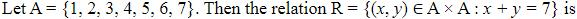
Hint 1: Test each property with a quick example. Is (1, 1) in R?
Hint 2: x + y = 7 is the same as y + x = 7. For transitivity, try (1, 6) and (6, 1).
What this tests: Properties of relations
1. Not reflexive: 1 + 1 ≠ 7.
2. Symmetric: x + y = 7 means y + x = 7.
3. Not transitive: (1, 6), (6, 1) are in R but (1, 1) is not.
Answer: (2)
If this felt hard: Revise Relations and Functions.
Claude’s answer: 2 · NTA final key: 2 · agrees · Answer recomputed by script (tools/verify_pyq_solutions.py)
Q2 · Mathematics · MCQ · ID 7155054223
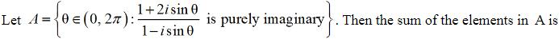
(4)
Hint 1: Multiply top and bottom by the conjugate 1 + i sin θ.
Hint 2: The real part is (1 − 2sin2θ)/(1 + sin2θ); set it to 0.
What this tests: Purely imaginary complex numbers
1. sin2θ = 1/2, and the imaginary part 3 sin θ is then non-zero.
2. θ = π/4, 3π/4, 5π/4, 7π/4 in (0, 2π).
3. Sum = 4π.
Answer: (3)
If this felt hard: Revise Complex Numbers.
Claude’s answer: 3 · NTA final key: 3 · agrees · Answer recomputed with SymPy (tools/verify_pyq_solutions.py)
Q3 · Mathematics · MCQ · ID 7155054224
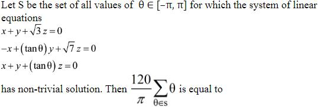
(1) 
(2) 
(4)
Hint 1: A homogeneous system has non-trivial solutions when the determinant is 0.
Hint 2: Det = tan2θ + (1 − √3)tan θ − √3 = (tan θ + 1)(tan θ − √3).
What this tests: Homogeneous linear systems
1. tan θ = −1: θ = −π/4, 3π/4. tan θ = √3: θ = π/3, −2π/3.
2. Σθ = π/6.
3. (120/π)(π/6) = 20.
Answer: (2)
If this felt hard: Revise Determinants.
Claude’s answer: 2 · NTA final key: 2 · agrees · Answer recomputed with SymPy (tools/verify_pyq_solutions.py)
Q4 · Mathematics · MCQ · ID 7155054225
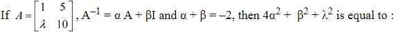
(1) 
(2) 
Hint 1: Use the Cayley–Hamilton theorem to write A−1 in terms of A and I.
Hint 2: A2 − 11A + (10 − 5λ)I = 0, so A−1 = (11I − A)/(10 − 5λ).
What this tests: Cayley–Hamilton theorem
1. α = −1/(10 − 5λ), β = 11/(10 − 5λ); α + β = 10/(10 − 5λ) = −2, so λ = 3.
2. α = 1/5, β = −11/5.
3. 4α2 + β2 + λ2 = 4/25 + 121/25 + 9 = 14.
Answer: (3)
If this felt hard: Revise Matrices (inverse).
Claude’s answer: 3 · NTA final key: 3 · agrees · Answer recomputed with SymPy (tools/verify_pyq_solutions.py)
Q5 · Mathematics · MCQ · ID 7155054226
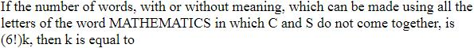
Hint 1: Count all arrangements, then subtract those with C and S together.
Hint 2: MATHEMATICS has M, A, T twice each. Total = 11!/(2!)3.
What this tests: Arrangements with restrictions
1. Total = 11!/8 = 4989600.
2. C, S together: 2 × 10!/8 = 907200.
3. Difference = 4082400 = 720 × 5670.
Answer: (4)
If this felt hard: Revise Permutations and Combinations.
Claude’s answer: 4 · NTA final key: 4 · agrees · Answer recomputed by script (tools/verify_pyq_solutions.py)
Q6 · Mathematics · MCQ · ID 7155054227
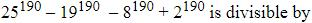
Hint 1: Group the four terms in pairs so that an − bn rules apply.
Hint 2: (25190 − 8190) − (19190 − 2190): each bracket is divisible by 17. Then test 7 separately.
What this tests: Divisibility
1. Both brackets are divisible by 25 − 8 = 17 and 19 − 2 = 17; the total is even (odd − odd − even + even). So 34 divides it.
2. Mod 7: 4190 − 5190 − 1 + 2190 ≡ 4 − 2 − 1 + 2 = 3, not 0. So 7, hence 14, does not divide it.
Answer: (3)
If this felt hard: Revise Binomial Theorem (divisibility).
Claude’s answer: 3 · NTA final key: 3 · agrees · Answer recomputed by script (tools/verify_pyq_solutions.py)
Q7 · Mathematics · MCQ · ID 7155054228
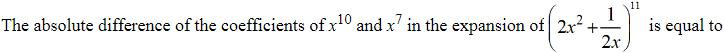
Hint 1: Write the general term and find r for x10 and x7.
Hint 2: Tr+1 = C(11,r)(2x2)11−r(2x)−r, power 22 − 3r.
What this tests: General term
1. x10: r = 4, coefficient C(11,4) × 23 = 2640.
2. x7: r = 5, coefficient C(11,5) × 2 = 924.
3. Difference 1716 = 123 − 12.
Answer: (2)
If this felt hard: Revise Binomial Theorem.
Claude’s answer: 2 · NTA final key: 2 · agrees · Answer recomputed with SymPy (tools/verify_pyq_solutions.py)
Q8 · Mathematics · MCQ · ID 7155054229
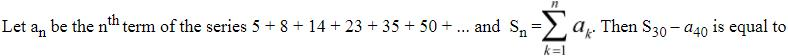
(1)
(4)
Hint 1: Look at the differences: 3, 6, 9, 12, …
Hint 2: an = 5 + 3n(n − 1)/2.
What this tests: Series with second differences constant
1. a40 = 5 + 3 × 780 = 2345.
2. S30 = 150 + 1.5 Σ(n2 − n) = 150 + 1.5 × 8990 = 13635.
3. S30 − a40 = 11290.
Answer: (3)
If this felt hard: Revise Sequences and Series.
Claude’s answer: 3 · NTA final key: 3 · agrees · Answer recomputed with SymPy (tools/verify_pyq_solutions.py)
Q9 · Mathematics · MCQ · ID 7155054230
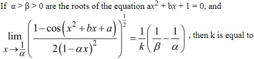
(1)
(2)
Hint 1: The equation x2 + bx + a = 0 has roots 1/α and 1/β. Use 1 − cos u ≈ u2/2.
Hint 2: x2 + bx + a = (x − 1/α)(x − 1/β) and 1 − αx = −α(x − 1/α).
What this tests: Limits with roots of quadratics
1. Inside the root: (x − 1/α)2(x − 1/β)2/(4α2(x − 1/α)2) → (1/α − 1/β)2/(4α2).
2. Square root: (1/(2α))(1/β − 1/α) (since β < α).
3. k = 2α.
Answer: (3)
If this felt hard: Revise Limits.
Claude’s answer: 3 · NTA final key: 3 · agrees · Answer recomputed with SymPy (tools/verify_pyq_solutions.py)
Q10 · Mathematics · ID 7155054231
Left out of the bank: dropped (NTA).
Q11 · Mathematics · MCQ · ID 7155054232
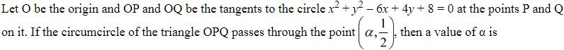
(2) 
Hint 1: O, P, Q and the centre C of the circle lie on one circle. Why?
Hint 2: ∠OPC = ∠OQC = 90°, so OC is a diameter of the circumcircle.
What this tests: Tangents and circumcircles
1. C = (3, −2). Circle on diameter OC: x(x − 3) + y(y + 2) = 0.
2. Put y = 1/2: α2 − 3α + 5/4 = 0, so α = 1/2 or 5/2.
3. 5/2 is an option.
Answer: (4)
If this felt hard: Revise Circles.
Claude’s answer: 4 · NTA final key: 4 · agrees · Answer recomputed with SymPy (tools/verify_pyq_solutions.py)
Q12 · Mathematics · MCQ · ID 7155054233
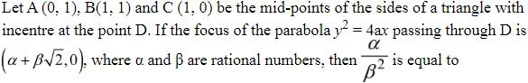
(2) 
(3) 
(4) 
Hint 1: Rebuild the triangle from its mid-points.
Hint 2: Vertices: (0, 0), (2, 0), (0, 2). Inradius of a right triangle r = (a + b − c)/2.
What this tests: Incentre and parabola
1. r = (2 + 2 − 2√2)/2 = 2 − √2, so D = (2 − √2, 2 − √2).
2. y2 = 4ax through D: 4a = 2 − √2, so a = 1/2 − √2/4.
3. α = 1/2, β = −1/4: α/β2 = 8.
Answer: (3)
If this felt hard: Revise Straight Lines and Conic Sections.
Claude’s answer: 3 · NTA final key: 3 · agrees · Answer recomputed with SymPy (tools/verify_pyq_solutions.py)
Q13 · Mathematics · MCQ · ID 7155054234
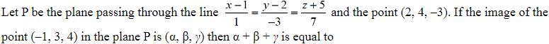
(1) 
(2) 
(3) 
(4) 
Hint 1: The plane contains the line's direction and the vector from a point on the line to (2, 4, −3).
Hint 2: Normal = (1, −3, 7) × (1, 2, 2) ∝ (4, −1, −1).
What this tests: Image of a point in a plane
1. Plane: 4x − y − z = 7.
2. For (−1, 3, 4): 4(−1) − 3 − 4 − 7 = −18, so the image is (−1, 3, 4) + 2(4, −1, −1) = (7, 1, 2).
3. α + β + γ = 10.
Answer: (2)
If this felt hard: Revise Three Dimensional Geometry.
Claude’s answer: 2 · NTA final key: 2 · agrees · Answer recomputed with SymPy (tools/verify_pyq_solutions.py)
Q14 · Mathematics · MCQ · ID 7155054235
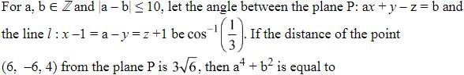
(1) 
(2) 
(4) 
Hint 1: The angle between a line and a plane uses sine: sin φ = |n·d|/(|n||d|).
Hint 2: cos φ = 1/3, so sin φ = 2√2/3. Line direction (1, −1, 1), normal (a, 1, −1).
What this tests: Angle between a line and a plane
1. |a − 2|/(√3√(a2 + 2)) = 2√2/3 gives 5a2 + 12a + 4 = 0, so a = −2 (integer).
2. Distance |−22 − b|/√6 = 3√6 gives b = −4 or −40; |a − b| ≤ 10 keeps b = −4.
3. a4 + b2 = 16 + 16 = 32.
Answer: (2)
If this felt hard: A common slip is to use cosine for a line–plane angle. Revise Three Dimensional Geometry.
Claude’s answer: 2 · NTA final key: 2 · agrees · Answer recomputed with SymPy (tools/verify_pyq_solutions.py)
Q15 · Mathematics · MCQ · ID 7155054236
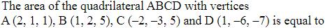
(1) 
(4) 
Hint 1: For a (planar) quadrilateral, area = (1/2)|AC × BD|.
Hint 2: AC = (−4, −4, 4), BD = (0, −8, −12).
What this tests: Area using diagonals
1. AC × BD = (80, −48, 32) = 16(5, −3, 2), magnitude 16√38.
2. Area = 8√38.
Answer: (2)
If this felt hard: Revise Vector Algebra.
Claude’s answer: 2 · NTA final key: 2 · agrees · Answer recomputed with SymPy (tools/verify_pyq_solutions.py)
Q16 · Mathematics · MCQ · ID 7155054237
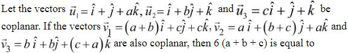
(1) 
(2) 
(3) 
(4) 
Hint 1: Write both coplanarity conditions as determinants.
Hint 2: First: a + b + c − abc = 2. Second: the determinant simplifies to 4abc.
What this tests: Coplanar vectors
1. v1, v2, v3 coplanar: 4abc = 0, so abc = 0.
2. Then a + b + c = 2.
3. 6(a + b + c) = 12.
Answer: (4)
If this felt hard: Revise Vector Algebra.
Claude’s answer: 4 · NTA final key: 4 · agrees · Answer recomputed with SymPy (tools/verify_pyq_solutions.py)
Q17 · Mathematics · MCQ · ID 7155054238
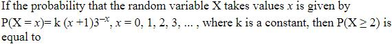
(2)
(3)
(4)
Hint 1: Probabilities add to 1. Find k.
Hint 2: Σ(x + 1)rx = 1/(1 − r)2 with r = 1/3.
What this tests: Discrete probability distributions
1. k × 9/4 = 1, k = 4/9.
2. P(X ≥ 2) = 1 − k(1 + 2/3) = 1 − 20/27 = 7/27.
Answer: (3)
If this felt hard: Revise Probability.
Claude’s answer: 3 · NTA final key: 3 · agrees · Answer recomputed with SymPy (tools/verify_pyq_solutions.py)
Q18 · Mathematics · MCQ · ID 7155054239
(1)
(2)
(3)
(4)
Hint 1: Recover Σx and Σx2, correct them, then recompute.
Hint 2: Σx = 54, Σx2 = 12(4 + 81/4) = 291.
What this tests: Corrected variance
1. Corrected Σx = 54 − 19 + 21 = 56; Σx2 = 291 − 181 + 245 = 355.
2. Variance = 355/12 − (56/12)2 = 281/36.
3. m + n = 317.
Answer: (4)
If this felt hard: Revise Statistics.
Claude’s answer: 4 · NTA final key: 4 · agrees · Answer recomputed with SymPy (tools/verify_pyq_solutions.py)
Q19 · Mathematics · MCQ · ID 7155054240
(1)
(2)
(3) 
(4) 
Hint 1: 4cos2θ − 1 = sin 3θ/sin θ. Each angle is three times the previous one.
Hint 2: The product telescopes to sin 729°/sin 9°.
What this tests: Trigonometric products
1. Product = (sin 27°/sin 9°)(sin 81°/sin 27°)(sin 243°/sin 81°)(sin 729°/sin 243°) = sin 729°/sin 9°.
2. sin 729° = sin 9°, so the product is 1.
3. 36 × 1 = 36.
Answer: (3)
If this felt hard: Revise the triple-angle formula in Trigonometric Functions.
Claude’s answer: 3 · NTA final key: 3 · agrees · Answer recomputed with SymPy (tools/verify_pyq_solutions.py)
Q20 · Mathematics · MCQ · ID 7155054241
(1)
(2)
(3)
(4)
Hint 1: Simplify (p ∧ ∼q) ∨ ∼p first.
Hint 2: It equals ∼p ∨ ∼q.
What this tests: Negation
1. Negation of ∼p ∨ ∼q is p ∧ q.
Answer: (2)
If this felt hard: Revise Mathematical Reasoning.
Claude’s answer: 2 · NTA final key: 2 · agrees · Answer recomputed by script (tools/verify_pyq_solutions.py)
Note: Mathematical reasoning is no longer in the JEE Main syllabus.
Q21 · Mathematics · Numerical · ID 7155054242
Hint 1: Two conditions: the log argument > 0 and the cos−1 argument in [−1, 1].
Hint 2: (2x + 1)(3x + 1)/(2x − 1) > 0; the numerator 2x2 − 3x + 4 is always positive.
What this tests: Domain of a function
1. Log: x ∈ (−1/2, −1/3) ∪ (1/2, ∞).
2. cos−1: needs 3x − 5 < 0 and 2x2 ≤ 1, so |x| ≤ 1/√2.
3. Domain (−1/2, −1/3) ∪ (1/2, 1/√2].
4. 18(1/4 + 1/9 + 1/4 + 1/2) = 20.
Answer: 20
If this felt hard: Revise Relations and Functions and Inverse Trigonometric Functions.
Claude’s answer: 20 · NTA final key: 20 · agrees · Answer recomputed with SymPy (tools/verify_pyq_solutions.py)
Q22 · Mathematics · Numerical · ID 7155054243
Hint 1: For the first equation, [x] = −x2 + 12x − 31 ≤ 5. Try each integer value.
Hint 2: Second: split at x = −2.
What this tests: Equations with [x] and |x|
1. First: for each n, the roots of x2 − 12x + 31 + n = 0 never lie in [n, n + 1). So m = 0.
2. Second: x ≥ −2 gives x = 7, −2; x < −2 gives x = −3. So n = 3.
3. m2 + mn + n2 = 9.
Answer: 9
If this felt hard: Always check each root against its case. Revise Quadratic Equations.
Claude’s answer: 9 · NTA final key: 9 · agrees · Answer recomputed with SymPy (tools/verify_pyq_solutions.py)
Q23 · Mathematics · Numerical · ID 7155054244
Hint 1: Count onto functions, then remove those with f(a) = 1.
Hint 2: Onto from 5 to 4: 4! × S(5,4) = 240.
What this tests: Onto functions
1. With f(a) = 1: the other 4 map onto {1, 2, 3, 4} (24) or onto {2, 3, 4} (36): 60.
2. 240 − 60 = 180.
Answer: 180
If this felt hard: Revise Permutations and Combinations.
Claude’s answer: 180 · NTA final key: 180 · agrees · Answer recomputed by script (tools/verify_pyq_solutions.py)
Q24 · Mathematics · Numerical · ID 7155054245
Hint 1: Divide xy + yz + zx = (3/√2)xyz by xyz.
Hint 2: 1/x + 1/y + 1/z = 3/y (AP) = 3/√2, so y = √2.
What this tests: AP and GP
1. GP: 2y2 = xz, so xz = 4.
2. AP: 2/y = (x + z)/xz, so x + z = 4√2.
3. 3(x + y + z)2 = 3(5√2)2 = 150.
Answer: 150
If this felt hard: Revise Sequences and Series.
Claude’s answer: 150 · NTA final key: 150 · agrees · Answer recomputed with SymPy (tools/verify_pyq_solutions.py)
Q25 · Mathematics · Numerical · ID 7155054246
Hint 1: Differentiable at x = 1 means continuous there and equal one-sided derivatives.
Hint 2: 3 + k√2 = m + k2 and 6 + k/(2√2) = 2m.
What this tests: Differentiability of piecewise functions
1. Solving: k = 7√2/8, m = 103/32.
2. f'(8) = 16m; f'(1/8) = 3/4 + k√2/3 = 4/3.
3. 8f'(8)/f'(1/8) = 96m = 309.
Answer: 309
If this felt hard: Revise Continuity and Differentiability.
Claude’s answer: 309 · NTA final key: 309 · agrees · Answer recomputed with SymPy (tools/verify_pyq_solutions.py)
Q26 · Mathematics · Numerical · ID 7155054247
Hint 1: Where does x2 cross 1, 2, 3, 4, 5 on [0, 2.4]?
Hint 2: [x2] = k on [√k, √(k + 1)); 2.42 = 5.76.
What this tests: Integrals of greatest-integer functions
1. Integral = (√2 − 1) + 2(√3 − √2) + 3(2 − √3) + 4(√5 − 2) + 5(2.4 − √5).
2. = 9 − √2 − √3 − √5.
3. α + β + γ + δ = 9 − 3 = 6.
Answer: 6
If this felt hard: Revise Definite Integrals.
Claude’s answer: 6 · NTA final key: 6 · agrees · Answer recomputed with SymPy (tools/verify_pyq_solutions.py)
Q27 · Mathematics · Numerical · ID 7155054248
Hint 1: Work out f on [0, 1) and [1, 2), then compare with y = 2 − x.
Hint 2: On [0, 1): f = min(x2 + 3/4, 1). On [1, 2): f ≥ 1.75 > 2 − x.
What this tests: Area with a min function
1. Area = ∫01/2(x2 + 3/4) dx + ∫1/21 1 dx + ∫12(2 − x) dx.
2. = 10/24 + 1/2 + 1/2 = 17/12.
3. 12A = 17.
Answer: 17
If this felt hard: Revise Application of Integrals.
Claude’s answer: 17 · NTA final key: 17 · agrees · Answer recomputed with SymPy (tools/verify_pyq_solutions.py)
Q28 · Mathematics · Numerical · ID 7155054249
Hint 1: Treat x as the function of y and substitute t = ln(cos y).
Hint 2: dt/dy = −tan y, giving dx/dt + 3x/t = −1/t2.
What this tests: Linear differential equations by substitution
1. Integrating factor t3: xt3 = −t2/2 + C, so x = −1/(2t) + C/t3.
2. At y = π/3, t = −ln 2 and x = 1/(2 ln 2): C = 0.
3. At y = π/6: t = (ln 3 − ln 4)/2, x = 1/(ln 4 − ln 3). m = 4, n = 3, mn = 12.
Answer: 12
If this felt hard: Revise Differential Equations.
Claude’s answer: 12 · NTA final key: 12 · agrees · Answer recomputed with SymPy (tools/verify_pyq_solutions.py)
Q29 · Mathematics · Numerical · ID 7155054250
Hint 1: Focus (3, 0), directrix x = −3: y2 = 12x. Take points (3t2, 6t).
Hint 2: Tangents at t1, t2 meet at (3t1t2, 3(t1 + t2)).
What this tests: Tangents to a parabola
1. t1 = 3t2 = 3t.
2. R = (9t2, 12t).
3. β2/α = 144t2/9t2 = 16.
Answer: 16
If this felt hard: Revise Conic Sections (parabola).
Claude’s answer: 16 · NTA final key: 16 · agrees · Answer recomputed with SymPy (tools/verify_pyq_solutions.py)
Q30 · Mathematics · Numerical · ID 7155054251
Hint 1: Find P2, then the line of intersection: a point and a direction.
Hint 2: P2: x − y − z = 3. Direction (1, −1, −1) × (3, −1, −7) ∝ (3, 2, 1).
What this tests: Foot of perpendicular on a line
1. A point on both planes: (4, 1, 0).
2. From (7, 4, −1): (3, 3, −1)·(3, 2, 1)/14 = 1, so the foot is (4, 1, 0) + (3, 2, 1) = (7, 3, 1).
3. α + β + γ = 11.
Answer: 11
If this felt hard: Revise Three Dimensional Geometry.
Claude’s answer: 11 · NTA final key: 11 · agrees · Answer recomputed with SymPy (tools/verify_pyq_solutions.py)
Q31 · Physics · MCQ · ID 7155054252
(1)
(2) 
(3) 
(4)
Hint 1: Write each as a combination of force, length and time.
Hint 2: Torque = N m; stress = N/m2; pressure gradient = N/m3; viscosity = N s/m2.
What this tests: Dimensions
1. Torque ML2T−2 (II); stress ML−1T−2 (IV); pressure gradient ML−2T−2 (I); viscosity ML−1T−1 (III).
Answer: (3)
If this felt hard: Revise Units and Measurements.
Claude’s answer: 3 · NTA final key: 3 · agrees · Answer recomputed by script (tools/verify_pyq_solutions.py)
Q32 · Physics · MCQ · ID 7155054253
(1)
(2)
(3)
(4)
Hint 1: At t = 0 where is P? Which way does it turn?
Hint 2: Initial angle 30° = π/6, increasing with time.
What this tests: Projection of uniform circular motion
1. Angle = ωt + π/6, so x = r cos(ωt + π/6).
Answer: (3)
If this felt hard: Revise Oscillations (SHM as projection).
Claude’s answer: 3 · NTA final key: 3 · agrees · Theory question: not computable, needs a teacher’s review
Note: Figure reading: P(t = 0) at 30° above the x-axis, moving anticlockwise.
Q33 · Physics · MCQ · ID 7155054254
(1)
(2)
(3)
(4)
Hint 1: Average KE ∝ absolute temperature.
Hint 2: Double T in kelvin.
What this tests: Kinetic energy and temperature
1. 300 K → 600 K = 327 °C.
Answer: (1)
If this felt hard: Convert to kelvin before doubling. Revise Kinetic Theory.
Claude’s answer: 1 · NTA final key: 1 · agrees · Answer recomputed by script (tools/verify_pyq_solutions.py)
Q34 · Physics · MCQ · ID 7155054255
(1)
(2)
(3)
(4)
Hint 1: Find the Carnot efficiency first.
Hint 2: η = 1 − T2/T1 = W/Q1.
What this tests: Carnot engine
1. η = 1 − 300/400 = 1/4.
2. Q1 = 2/(1/4) = 8 kJ.
Answer: (3)
If this felt hard: Revise Thermodynamics.
Claude’s answer: 3 · NTA final key: 3 · agrees · Answer recomputed by script (tools/verify_pyq_solutions.py)
Q35 · Physics · MCQ · ID 7155054256
(1)
(2)
(3)
(4)
Hint 1: Pressure on the large piston = weight/area. Pascal's law makes it the same everywhere.
Hint 2: P = mg/A.
What this tests: Hydraulic lift
1. P = 50000/(250 × 10−4) = 2 × 106 Pa.
Answer: (4)
If this felt hard: Revise Mechanical Properties of Fluids.
Claude’s answer: 4 · NTA final key: 4 · agrees · Answer recomputed by script (tools/verify_pyq_solutions.py)
Q36 · Physics · MCQ · ID 7155054257
(1)
(2)
(3)
(4)
Hint 1: Topic: Variation of g with height. Which rule or fact from it settles this question?
Hint 2: Expand g(1 + h/R)−2 for small h.
What this tests: Variation of g with height
1. g' ≈ g(1 − 2h/R).
Answer: (1)
If this felt hard: Revise Gravitation.
Claude’s answer: 1 · NTA final key: 1 · agrees · Theory question: not computable, needs a teacher’s review
Q37 · Physics · MCQ · ID 7155054258
(1)
(2)
(3)
(4)
Hint 1: How does L depend on the orbit radius?
Hint 2: L = m√(GMr), so L ∝ √r.
What this tests: Angular momentum of a satellite
1. 'Increased by eight times' is read as r → r + 8r = 9r.
2. L' = √9 L = 3L.
Answer: (1)
If this felt hard: Revise Gravitation.
Claude’s answer: 1 · NTA final key: 1 · agrees · Answer recomputed by script (tools/verify_pyq_solutions.py)
Note: NTA's key (3L) reads 'increased by eight times' as an increase of 8r (new distance 9r). Reading it as 'becomes 8r' gives 2√2 L, which is not an option.
Q38 · Physics · MCQ · ID 7155054259
(1)
(2)
(3)
(4)
Hint 1: Area under v–t gives which quantity: distance or displacement?
Hint 2: Area under a–t gives the change in velocity.
What this tests: Motion graphs
1. Statement I is incorrect: the area gives displacement (distance only if v does not change sign).
2. Statement II is correct.
Answer: (4)
If this felt hard: Revise Motion in a Straight Line.
Claude’s answer: 4 · NTA final key: 4 · agrees · Theory question: not computable, needs a teacher’s review
Q39 · Physics · MCQ · ID 7155054260
(1)
(2)
(3)
(4) 
Hint 1: Maximum height is where dy/dx = 0.
Hint 2: 1 − x/10 = 0 at x = 10.
What this tests: Projectile trajectory
1. y(10) = 10 − 5 = 5 m.
Answer: (1)
If this felt hard: Revise Motion in a Plane.
Claude’s answer: 1 · NTA final key: 1 · agrees · Answer recomputed with SymPy (tools/verify_pyq_solutions.py)
Q40 · Physics · MCQ · ID 7155054261
(1)
(2)
(3)
(4)
Hint 1: Momentum is conserved in the collision; then friction stops the block.
Hint 2: v = 0.1 × 400/4 = 10 m/s; v2 = 2μgs.
What this tests: Collisions and friction
1. 100 = 2μ × 10 × 20, so μ = 0.25.
Answer: (1)
If this felt hard: Revise Laws of Motion and Work, Energy and Power.
Claude’s answer: 1 · NTA final key: 1 · agrees · Answer recomputed by script (tools/verify_pyq_solutions.py)
Q41 · Physics · MCQ · ID 7155054262
(1)
(2)
(3)
(4)
Hint 1: V = kq/r.
Hint 2: r = kq/V.
What this tests: Potential of a point charge
1. r = 9 × 109 × 5 × 10−9/50 = 0.9 m = 90 cm.
Answer: (1)
If this felt hard: Revise Electrostatic Potential.
Claude’s answer: 1 · NTA final key: 1 · agrees · Answer recomputed by script (tools/verify_pyq_solutions.py)
Q42 · Physics · MCQ · ID 7155054263
(1)
(2)
(3)
(4)
Hint 1: Recall the antenna power formula.
Hint 2: P ∝ (l/λ)2.
What this tests: Antenna size
1. (l/λ)2.
Answer: (3)
If this felt hard: Revise Communication Systems.
Claude’s answer: 3 · NTA final key: 3 · agrees · Theory question: not computable, needs a teacher’s review
Note: Communication systems is no longer in the JEE Main syllabus.
Q43 · Physics · MCQ · ID 7155054264
(1)
(2)
(3)
(4)
Hint 1: Find Ic from the collector circuit, then Ib = Ic/β.
Hint 2: Taking VCE ≈ 0: Ic = VCC/RC.
What this tests: Transistor as an amplifier
1. Ic = 1/1000 = 1 mA.
2. Ib = 1 mA/100 = 10 μA.
Answer: (2)
If this felt hard: Revise Semiconductor Electronics.
Claude’s answer: 2 · NTA final key: 2 · agrees · Answer recomputed by script (tools/verify_pyq_solutions.py)
Note: NTA's key assumes V_{CE} ≈ 0 (all of V_{CC} across R_{C}); V_{BB} is not given.
Q44 · Physics · MCQ · ID 7155054265
(1)
(2)
(3)
(4)
Hint 1: 1/8 = (1/2)3. What is the half-life?
Hint 2: T1/2 = 1 day.
What this tests: Radioactive decay
1. After 5 days the amount is N0/32.
2. N0 = 32 × 8 × 10−3 kg = 256 g.
Answer: (3)
If this felt hard: Revise Nuclei.
Claude’s answer: 3 · NTA final key: 3 · agrees · Answer recomputed by script (tools/verify_pyq_solutions.py)
Q45 · Physics · MCQ · ID 7155054266
(1) 
(2) 
(3) 
(4)
Hint 1: Which depends on intensity and which on frequency?
Hint 2: Intensity → number of electrons; frequency → KEmax.
What this tests: Photoelectric effect
1. A true, C true.
2. B false, D false (no threshold intensity), E false.
Answer: (3)
If this felt hard: Revise Dual Nature of Radiation and Matter.
Claude’s answer: 3 · NTA final key: 3 · agrees · Theory question: not computable, needs a teacher’s review
Q46 · Physics · MCQ · ID 7155054267
(1)
(2)
(3)
(4)
Hint 1: Fringe width β = λD/d.
Hint 2: β ∝ λ.
What this tests: Fringe width
1. β = 2 × 600/400 = 3 mm.
Answer: (2)
If this felt hard: Revise Wave Optics.
Claude’s answer: 2 · NTA final key: 2 · agrees · Answer recomputed by script (tools/verify_pyq_solutions.py)
Q47 · Physics · MCQ · ID 7155054268
(1)
(2)
(3)
(4)
Hint 1: Topic: Production of X-rays. Which rule or fact from it settles this question?
Hint 2: What happens when fast electrons hit a metal target (Coolidge tube)?
What this tests: Production of X-rays
1. X-rays.
Answer: (4)
If this felt hard: Revise Electromagnetic Waves.
Claude’s answer: 4 · NTA final key: 4 · agrees · Theory question: not computable, needs a teacher’s review
Q48 · Physics · MCQ · ID 7155054269
(1)
(2)
(3)
(4)
Hint 1: Motional emf: e = Blv.
Hint 2: v = e/(Bl).
What this tests: Motional emf
1. v = 0.08/(0.4 × 0.1) = 2 m/s.
Answer: (2)
If this felt hard: Revise Electromagnetic Induction.
Claude’s answer: 2 · NTA final key: 2 · agrees · Answer recomputed by script (tools/verify_pyq_solutions.py)
Q49 · Physics · MCQ · ID 7155054270
(1) 
(2)
(3)
(4)
Hint 1: What makes a good electromagnet core?
Hint 2: High permeability, low retentivity and low coercivity.
What this tests: Soft iron
1. Both statements correct, and R explains A.
Answer: (1)
If this felt hard: Revise Magnetism and Matter.
Claude’s answer: 1 · NTA final key: 1 · agrees · Theory question: not computable, needs a teacher’s review
Q50 · Physics · MCQ · ID 7155054271
(1)
(2)
(3)
(4)
Hint 1: Follow the plain wires: which points are really the same node?
Hint 2: The top wire joins A to D; the bottom wire joins C to B.
What this tests: Equivalent resistance
1. A = D and C = B, so all three resistors sit between A and B.
2. 1/R = 1/20 + 1/20 + 1/10 = 1/5.
3. R = 5 kΩ.
Answer: (1)
If this felt hard: Mark nodes joined by wires first. Revise Current Electricity.
Claude’s answer: 1 · NTA final key: 1 · agrees · Answer recomputed by script (tools/verify_pyq_solutions.py)
Note: Figure reading: top wire A–D, bottom wire C–B.
Q51 · Physics · Numerical · ID 7155054272
Hint 1: Fundamental frequency f = v/2L (same tension and wire).
Hint 2: f ∝ 1/L.
What this tests: Vibrating strings
1. L = 90 × 120/180 = 60 cm.
Answer: 60
If this felt hard: Revise Waves.
Claude’s answer: 60 · NTA final key: 60 · agrees · Answer recomputed by script (tools/verify_pyq_solutions.py)
Q52 · Physics · Numerical · ID 7155054273
Hint 1: Thermal stress = Y × α × ΔT.
Hint 2: F = YAαΔT.
What this tests: Thermal stress
1. F = 2 × 1011 × 10−4 × 10−5 × 200 = 4 × 104 N.
Answer: 4
If this felt hard: Revise Thermal Properties of Matter.
Claude’s answer: 4 · NTA final key: 4 · agrees · Answer recomputed by script (tools/verify_pyq_solutions.py)
Q53 · Physics · Numerical · ID 7155054274
Hint 1: A rolling hollow sphere has both translational and rotational KE.
Hint 2: KE = (1/2)mv2(1 + 2/3) = (5/6)mv2 = mgh.
What this tests: Rolling motion
1. h = 5v2/(6g) = 5 × 9/60 = 0.75 m = 75 cm.
Answer: 75
If this felt hard: Revise System of Particles and Rotational Motion.
Claude’s answer: 75 · NTA final key: 75 · agrees · Answer recomputed by script (tools/verify_pyq_solutions.py)
Note: Assumes rolling without slipping all the way up and that all the KE becomes PE at the top.
Q54 · Physics · Numerical · ID 7155054275
Hint 1: Impulse changes momentum: Δp = FΔt.
Hint 2: KE = p2/2m.
What this tests: Impulse and kinetic energy
1. p goes from 10 to 20 kg m/s.
2. KE goes from 100/10 = 10 J to 400/10 = 40 J; increase 30 J.
Answer: 30
If this felt hard: Revise Work, Energy and Power.
Claude’s answer: 30 · NTA final key: 30 · agrees · Answer recomputed by script (tools/verify_pyq_solutions.py)
Q55 · Physics · Numerical · ID 7155054276
Hint 1: Topic: Energy loss when capacitors share charge. Which rule or fact from it settles this question?
Hint 2: Charge is shared; energy lost = C1C2V2/(2(C1 + C2)).
What this tests: Energy loss when capacitors share charge
1. Loss = (600 × 600/1200) × 10−12 × 2002/2 = 6 × 10−6 J = 6 μJ.
Answer: 6
If this felt hard: Revise Electrostatic Potential and Capacitance.
Claude’s answer: 6 · NTA final key: 6 · agrees · Answer recomputed by script (tools/verify_pyq_solutions.py)
Q56 · Physics · Numerical · ID 7155054277
Hint 1: 1/λ ∝ 1/22 − 1/n2.
Hint 2: Hα: n = 3; Hβ: n = 4.
What this tests: Hydrogen spectrum
1. 1/λα ∝ 5/36, 1/λβ ∝ 3/16.
2. λα/λβ = (3/16)/(5/36) = 27/20.
Answer: 27
If this felt hard: Revise Atoms.
Claude’s answer: 27 · NTA final key: 27 · agrees · Answer recomputed by script (tools/verify_pyq_solutions.py)
Q57 · Physics · Numerical · ID 7155054278
Hint 1: Use n2/v − n1/u = (n2 − n1)/R with sign convention.
Hint 2: u = −15 cm, R = +30 cm, n1 = 1, n2 = 1.5.
What this tests: Refraction at a spherical surface
1. 1.5/v + 1/15 = 0.5/30.
2. 1.5/v = −1/20, so v = −30 cm (virtual, in the rarer medium).
3. Distance 30 cm.
Answer: 30
If this felt hard: Revise Ray Optics.
Claude’s answer: 30 · NTA final key: 30 · agrees · Answer recomputed with SymPy (tools/verify_pyq_solutions.py)
Q58 · Physics · Numerical · ID 7155054279
Hint 1: Quality factor of a series LCR circuit.
Hint 2: Q = (1/R)√(L/C).
What this tests: Q factor
1. √(1/6.25 × 10−6) = 400.
2. Q = 400/100 = 4.
Answer: 4
If this felt hard: Revise Alternating Current.
Claude’s answer: 4 · NTA final key: 4 · agrees · Answer recomputed by script (tools/verify_pyq_solutions.py)
Q59 · Physics · Numerical · ID 7155054280
Hint 1: Compare B at the centre and on the axis at distance x = r.
Hint 2: Baxis/Bcentre = r3/(r2 + x2)3/2.
What this tests: Field on the axis of a loop
1. At x = r: ratio centre/axis = (2r2)3/2/r3 = 2√2 = √8.
2. x = 8.
Answer: 8
If this felt hard: Revise Moving Charges and Magnetism.
Claude’s answer: 8 · NTA final key: 8 · agrees · Answer recomputed by script (tools/verify_pyq_solutions.py)
Q60 · Physics · Numerical · ID 7155054281
Hint 1: I = neAvd.
Hint 2: vd = I/(neA).
What this tests: Drift velocity
1. vd = 3.2/(8 × 1028 × 1.6 × 10−19 × 2 × 10−6) = 1.25 × 10−4 m/s = 125 × 10−6.
Answer: 125
If this felt hard: Revise Current Electricity.
Claude’s answer: 125 · NTA final key: 125 · agrees · Answer recomputed by script (tools/verify_pyq_solutions.py)
Q61 · Chemistry · MCQ · ID 7155054282
(1)
(2) 
(3)
(4) 
Hint 1: Topic: Significant figures. Which rule or fact from it settles this question?
Hint 2: Leading zeros never count; zeros between or after (with a decimal) do.
What this tests: Significant figures
1. A: 3. B: 5. C: 3. D: 3.
2. A, C and D.
Answer: (4)
If this felt hard: Revise Some Basic Concepts of Chemistry.
Claude’s answer: 4 · NTA final key: 4 · agrees · Answer recomputed by script (tools/verify_pyq_solutions.py)
Q62 · Chemistry · MCQ · ID 7155054283
(1)
(2)
(3)
(4)
Hint 1: 'a' measures intermolecular attraction. Which molecule attracts most?
Hint 2: Larger, more polarisable or H-bonding molecules have larger a.
What this tests: van der Waals constants
1. Ar < CH4 < H2O < C6H6 (a ≈ 1.3, 2.3, 5.5, 18 L2 atm mol−2).
Answer: (1)
If this felt hard: Revise States of Matter.
Claude’s answer: 1 · NTA final key: 1 · agrees · Theory question: not computable, needs a teacher’s review
Q63 · Chemistry · MCQ · ID 7155054284
(1)
(2)
(3)
(4)
Hint 1: Topic: Effect of a catalyst. Which rule or fact from it settles this question?
Hint 2: A catalyst changes the activation energy, not the reactant and product energies.
What this tests: Effect of a catalyst
1. Same start and end levels, lower peak with catalyst: graph 3.
Answer: (3)
If this felt hard: Revise Chemical Kinetics.
Claude’s answer: 3 · NTA final key: 3 · agrees · Theory question: not computable, needs a teacher’s review
Q64 · Chemistry · MCQ · ID 7155054285
(1)
(2)
(3)
(4)
Hint 1: Topic: Moseley's law. Which rule or fact from it settles this question?
Hint 2: Moseley's law: √ν = a(Z − b).
What this tests: Moseley's law
1. √ν against Z is a straight line: graph 1.
Answer: (1)
If this felt hard: Revise Classification of Elements.
Claude’s answer: 1 · NTA final key: 1 · agrees · Theory question: not computable, needs a teacher’s review
Note: Strictly the line has an intercept at Z = b; the graph is schematic.
Q65 · Chemistry · MCQ · ID 7155054286
(1)
(2)
(3)
(4)
Hint 1: Which substance is oxidised at the anode in the Hall–Héroult cell?
Hint 2: Carbon (graphite) anode: 2Al2O3 + 3C → 4Al + 3CO2.
What this tests: Extraction of aluminium
1. Graphite. Na3AlF6 and CaF2 only lower the melting point and improve conductivity.
Answer: (2)
If this felt hard: Revise General Principles of Isolation of Elements.
Claude’s answer: 2 · NTA final key: 2 · agrees · Theory question: not computable, needs a teacher’s review
Note: Metallurgy is no longer in the JEE Main syllabus.
Q66 · Chemistry · MCQ · ID 7155054287
(1)
(2)
(3)
(4)
Hint 1: How is H2O2 stabilised in storage (NCERT)?
Hint 2: Stored in wax-lined bottles in the dark; urea is added as a stabiliser.
What this tests: Storage of hydrogen peroxide
1. Urea.
Answer: (2)
If this felt hard: Revise Hydrogen (NCERT).
Claude’s answer: 2 · NTA final key: 2 · agrees · Theory question: not computable, needs a teacher’s review
Q67 · Chemistry · MCQ · ID 7155054288
(1) 
(2)
(3) 
(4) 
Hint 1: Why does the sea hold more sodium than potassium?
Hint 2: Larger K+ is held more by soil (clay), so less reaches the sea.
What this tests: Abundance of Na and K
1. A true (NCERT).
2. R true, and NTA takes it as the explanation.
Answer: (1)
If this felt hard: Revise The s-Block Elements.
Claude’s answer: 1 · NTA final key: 1 · agrees · Theory question: not computable, needs a teacher’s review
Note: Teacher look: R alone (size) is a thin explanation; NTA's key treats it as the reason.
Q68 · Chemistry · MCQ · ID 7155054289
(1) 
(2) 
(3) 
(4) 
Hint 1: Topic: Cement. Which rule or fact from it settles this question?
Hint 2: Recall NCERT's composition of good cement.
What this tests: Cement
1. The ratio is close to 2.
Answer: (2)
If this felt hard: Revise everyday chemistry (cement).
Claude’s answer: 2 · NTA final key: 2 · agrees · Theory question: not computable, needs a teacher’s review
Note: Not in the current syllabus.
Q69 · Chemistry · MCQ · ID 7155054290
(1)
(2) 
(3) 
(4)
Hint 1: Find each metal's oxidation state and d-count; decide high/low spin.
Hint 2: Cr3+ d3; Fe2+ d6 with water (high spin); Co3+ d6 with NH3 (low spin); Ni2+ d8.
What this tests: Unpaired electrons in complexes
1. A: 3 (II). B: 4 (IV). C: 0 (I). D: 2 (III).
Answer: (1)
If this felt hard: Revise Coordination Compounds.
Claude’s answer: 1 · NTA final key: 1 · agrees · Theory question: not computable, needs a teacher’s review
Q70 · Chemistry · MCQ · ID 7155054291
(1)
(2)
(3)
(4)
Hint 1: Topic: Ozone depletion. Which rule or fact from it settles this question?
Hint 2: Recall the chain: CF2Cl2 → Cl·, Cl· + O3, ClO· + O.
What this tests: Ozone depletion
1. 2ClO· → ClO2 + Cl· is not in NCERT's mechanism.
Answer: (4)
If this felt hard: Revise Environmental Chemistry.
Claude’s answer: 4 · NTA final key: 4 · agrees · Theory question: not computable, needs a teacher’s review
Note: Environmental chemistry is no longer in the JEE Main syllabus.
Q71 · Chemistry · MCQ · ID 7155054292
(1)
(2)
(3)
(4)
Hint 1: Br2 adds to the C=C via a bromonium ion. Which nucleophile is inside the molecule?
Hint 2: NaHCO3 makes the carboxylate, which opens the bromonium ion (bromolactonisation).
What this tests: Halolactonisation
1. The carboxylate attacks the inner carbon, giving a five-membered lactone with CH2Br.
Answer: (4)
If this felt hard: Revise Hydrocarbons (addition of halogens).
Claude’s answer: 4 · NTA final key: 4 · agrees · Theory question: not computable, needs a teacher’s review
Note: Bromolactonisation goes beyond NCERT.
Q72 · Chemistry · MCQ · ID 7155054293
(1)
(2)
(3)
(4)
Hint 1: COOH is the principal group: C-1. Number the main chain from it.
Hint 2: CH3–CO–CH2–CH2–CH(CH3)–COOH.
What this tests: IUPAC naming
1. Chain of 6 C from COOH: 2-methyl, 5-oxo.
2. 2-Methyl-5-oxohexanoic acid.
Answer: (4)
If this felt hard: Revise Organic Chemistry: Some Basic Principles.
Claude’s answer: 4 · NTA final key: 4 · agrees · Theory question: not computable, needs a teacher’s review
Q73 · Chemistry · MCQ · ID 7155054294
(1)
(2)
(3)
(4)
Hint 1: Electron-withdrawing groups at ortho/para speed up nucleophilic substitution on the ring.
Hint 2: More NO2 groups → faster; OMe slows it.
What this tests: Nucleophilic aromatic substitution
1. D (three NO2) > B (one o-NO2) > A > C (o-OMe).
Answer: (4)
If this felt hard: Revise Haloalkanes and Haloarenes.
Claude’s answer: 4 · NTA final key: 4 · agrees · Theory question: not computable, needs a teacher’s review
Q74 · Chemistry · MCQ · ID 7155054295
(1)
(2)
(3)
(4)
Hint 1: Stronger −I groups stabilise the carboxylate more.
Hint 2: F3C > F > Cl > Br > H.
What this tests: Acidity of carboxylic acids
1. B > D > C > E > A.
Answer: (4)
If this felt hard: Revise Aldehydes, Ketones and Carboxylic Acids.
Claude’s answer: 4 · NTA final key: 4 · agrees · Theory question: not computable, needs a teacher’s review
Q75 · Chemistry · MCQ · ID 7155054296
(1)
(2)
(3)
(4)
Hint 1: Which indicator is made from phthalic anhydride?
Hint 2: Phenol + phthalic anhydride (conc. H2SO4) → phenolphthalein.
What this tests: Preparation of phenolphthalein
1. X = carbolic acid (phenol), Y = phenolphthalein.
Answer: (4)
If this felt hard: Revise Alcohols, Phenols and Ethers.
Claude’s answer: 4 · NTA final key: 4 · agrees · Theory question: not computable, needs a teacher’s review
Q76 · Chemistry · MCQ · ID 7155054297
(1)
(2)
(3)
(4)
Hint 1: Br goes where both groups direct. Then the NO2 becomes NH2, then is removed.
Hint 2: CH3 (o/p) and NO2 (m) both direct to the carbon next to CH3.
What this tests: Using an amino group as a temporary director
1. Bromination ortho to CH3.
2. H2/Pd: NO2 → NH2; diazotise; H3PO2 replaces N2+ by H.
3. Product: 2-bromotoluene.
Answer: (1)
If this felt hard: Revise Amines (diazonium salts).
Claude’s answer: 1 · NTA final key: 1 · agrees · Theory question: not computable, needs a teacher’s review
Note: Assumes H_{2}/Pd reduces NO_{2} without removing Br.
Q77 · Chemistry · MCQ · ID 7155054298
(1)
(2)
(3) 
(4)
Hint 1: Topic: Drug–receptor interaction. Which rule or fact from it settles this question?
Hint 2: Antagonists block receptors. Do they mimic the messenger?
What this tests: Drug–receptor interaction
1. They bind to the receptor site (A) and inhibit natural communication (C).
Answer: (4)
If this felt hard: Revise Chemistry in Everyday Life.
Claude’s answer: 4 · NTA final key: 4 · agrees · Theory question: not computable, needs a teacher’s review
Note: Chemistry in everyday life is no longer in the JEE Main syllabus.
Q78 · Chemistry · MCQ · ID 7155054299
(1)
(2) 
(3) 
(4) 
Hint 1: Recall the one-letter codes.
Hint 2: Glutamic acid E, glutamine Q, tyrosine Y, tryptophan W.
What this tests: Amino acid codes
1. A-III, B-I, C-IV, D-II.
Answer: (1)
If this felt hard: Revise Biomolecules.
Claude’s answer: 1 · NTA final key: 1 · agrees · Theory question: not computable, needs a teacher’s review
Q79 · Chemistry · MCQ · ID 7155054300
(1)
(2) 
(3) 
(4) 
Hint 1: Is methyl orange an acid or a base indicator? Which form is more deeply coloured?
Hint 2: Methyl orange acts as a weak base; the quinonoid form is the deeply coloured one.
What this tests: Theory of indicators
1. Statement I incorrect.
2. Statement II incorrect.
Answer: (2)
If this felt hard: Revise Equilibrium (indicators).
Claude’s answer: 2 · NTA final key: 2 · agrees · Theory question: not computable, needs a teacher’s review
Note: Teacher look: NTA treats methyl orange as a weak base (Ostwald theory).
Q80 · Chemistry · MCQ · ID 7155054301
(1)
(2) 
(3) 
(4) 
Hint 1: Match each indicator type to what it responds to.
Hint 2: Redox indicators respond to potential; acid–base indicators to pH.
What this tests: Indicators in titrations
1. Both statements have them swapped: both incorrect.
Answer: (2)
If this felt hard: Revise Redox Reactions and Equilibrium.
Claude’s answer: 2 · NTA final key: 2 · agrees · Theory question: not computable, needs a teacher’s review
Q81 · Chemistry · Numerical · ID 7155054302
Hint 1: Radial nodes = n − l − 1.
Hint 2: s: l = 0, p: 1, d: 2.
What this tests: Nodes in orbitals
1. 7s: 6. 7p: 5. 6s: 5. 8p: 6. 8d: 5.
2. Three orbitals.
Answer: 3
If this felt hard: Revise Structure of Atom.
Claude’s answer: 3 · NTA final key: 3 · agrees · Answer recomputed by script (tools/verify_pyq_solutions.py)
Q82 · Chemistry · Numerical · ID 7155054303
Hint 1: Count Xe's valence electrons (8, adjusted for the charge) and see how many each O and F uses.
Hint 2: Lone pairs = (valence electrons on Xe − electrons used in bonds)/2 (O uses 2, F uses 1).
What this tests: VSEPR for xenon compounds
1. XeF5+: (7 − 5)/2 = 1. XeO3: (8 − 6)/2 = 1. XeO2F2: (8 − 6)/2 = 1. XeOF4: (8 − 6)/2 = 1.
2. XeF5−: 2. XeO3F2: 0. XeF4: 2.
3. Four species.
Answer: 4
If this felt hard: Revise Chemical Bonding and The p-Block Elements.
Claude’s answer: 4 · NTA final key: 4 · agrees · Answer recomputed by script (tools/verify_pyq_solutions.py)
Q83 · Chemistry · Numerical · ID 7155054304
Hint 1: A bomb calorimeter measures ΔU. Convert to ΔH.
Hint 2: ΔH = ΔU + ΔngRT with Δng = 2 − 4 = −2. At equilibrium ΔG = 0, so TΔS = ΔH.
What this tests: ΔU, ΔH and Gibbs energy
1. ΔH = −1406 − 2 × 8.3 × 300/1000 = −1411 kJ/mol.
2. TΔS = −1411 kJ.
Answer: 1411
If this felt hard: Revise Thermodynamics.
Claude’s answer: 1411 · NTA final key: 1411 · agrees · Answer recomputed by script (tools/verify_pyq_solutions.py)
Q84 · Chemistry · Numerical · ID 7155054305
Hint 1: Kb = RTb2M/(1000ΔHvap).
Hint 2: Kb ∝ Tb2/ΔHvap for the same M.
What this tests: Ebullioscopic constant
1. Ratio = (2/1)2 × (2/1) = 8.
Answer: 8
If this felt hard: Revise Solutions.
Claude’s answer: 8 · NTA final key: 8 · agrees · Answer recomputed by script (tools/verify_pyq_solutions.py)
Q85 · Chemistry · Numerical · ID 7155054306
Hint 1: The common ion SO42− is 0.1 M.
Hint 2: s = Ksp/0.1.
What this tests: Common ion effect
1. s = 10−9 mol/L.
2. × 233 = 233 × 10−9 g/L.
Answer: 233
If this felt hard: Revise Equilibrium.
Claude’s answer: 233 · NTA final key: 233 · agrees · Answer recomputed by script (tools/verify_pyq_solutions.py)
Q86 · Chemistry · Numerical · ID 7155054307
Hint 1: What does 'standard' mean for E°?
Hint 2: E° refers to fixed standard conditions (1 bar).
What this tests: Thermodynamics of cells
1. A, C and D are correct.
2. B is incorrect: E° does not depend on pressure.
Answer: 1
If this felt hard: Revise Electrochemistry.
Claude’s answer: 1 · NTA final key: 1 · agrees · Theory question: not computable, needs a teacher’s review
Q87 · Chemistry · Numerical · ID 7155054308
Hint 1: Topic: Coagulation. Which rule or fact from it settles this question?
Hint 2: Coagulating power ∝ 1/coagulating value.
What this tests: Coagulation
1. x = 50.04/0.09 = 556.
Answer: 556
If this felt hard: Revise Surface Chemistry.
Claude’s answer: 556 · NTA final key: 556 · agrees · Answer recomputed by script (tools/verify_pyq_solutions.py)
Note: Surface chemistry is no longer in the JEE Main syllabus.
Q88 · Chemistry · Numerical · ID 7155054309
Hint 1: Draw H4P2O7: two P(=O)(OH)2 groups joined by O.
Hint 2: Each P: one P=O, two P–OH, one bridging P–O.
What this tests: Structure of oxoacids of phosphorus
1. σ: 2 P=O σ + 4 P–OH + 4 O–H + 2 bridging = 12. π: 2.
2. Ratio 6.
Answer: 6
If this felt hard: Revise The p-Block Elements.
Claude’s answer: 6 · NTA final key: 6 · agrees · Theory question: not computable, needs a teacher’s review
Q89 · Chemistry · Numerical · ID 7155054310
Hint 1: Find each oxidation state.
Hint 2: CO is neutral.
What this tests: Oxidation states
1. Fe 0, V +4, W +6.
2. Sum 10.
Answer: 10
If this felt hard: Revise Redox Reactions.
Claude’s answer: 10 · NTA final key: 10 · agrees · Answer recomputed by script (tools/verify_pyq_solutions.py)
Q90 · Chemistry · Numerical · ID 7155054311
Hint 1: μ = √(n(n + 2)): which n gives about 6?
Hint 2: n = 5 gives 5.92.
What this tests: Magnetic moment
1. 5 unpaired: Mn2+ (d5) with weak-field NCS−.
2. Charge = 2 − 6 = −4, so x = 4.
Answer: 4
If this felt hard: Revise Coordination Compounds.
Claude’s answer: 4 · NTA final key: 4 · agrees · Answer recomputed by script (tools/verify_pyq_solutions.py)